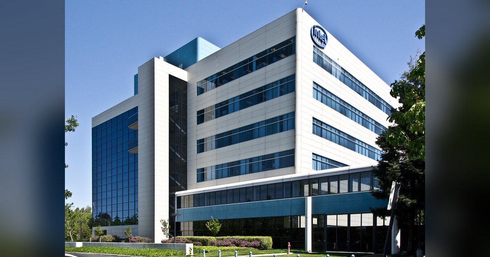

인텔 주가 하루 28.58% 폭락, 실적은 예상보다 좋았는데 52년 만의 최악이 된 이유
10월 30일(현지시간) 뉴욕 증시가 문을 닫았을 때 인텔 주가는 65.76달러였습니다. 전날 종가 92.07달러에서 하루 만에 26.31달러, 28.58%가 빠졌습니다.

10월 30일(현지시간) 뉴욕 증시가 문을 닫았을 때 인텔 주가는 65.76달러였습니다. 전날 종가 92.07달러에서 하루 만에 26.31달러, 28.58%가 빠졌습니다.